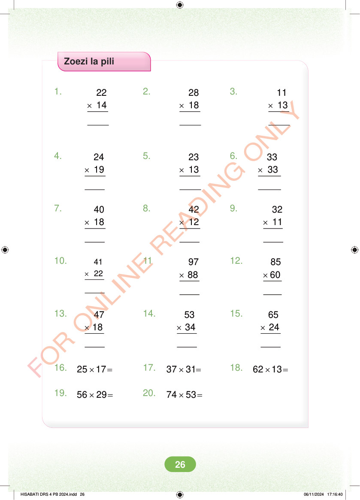

Zoezi la pili 1. × × × 22 14 2. 28 18 3. 11 13 4. × × × 24 19 5. 23 13 6. 33 33 7. × × × 40 18 8. 42 12 9. 32 11 10. × 41 22 11 × × 97 88 12. 85 60 13. × × × 47 18 14. 53 34 15. 65 24 16. × = 25 17 17. × = 37 31 18. × = 62 13 19. × = 56 29 20. × = 74 53 HISABATI DRS 4 PB 2024.indd 26 HISABATI DRS 4 PB 2024.indd 26 06/11/2024 17:16:40 06/11/2024 17:16:40